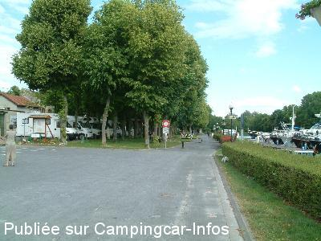
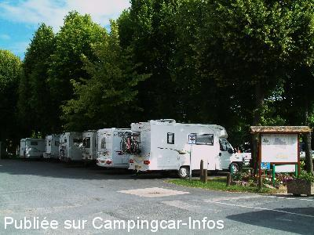
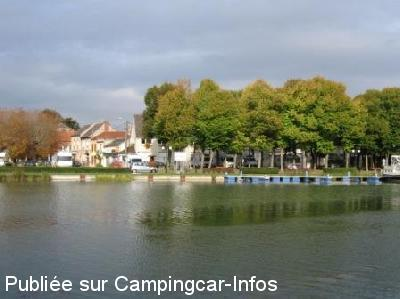
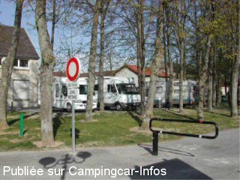
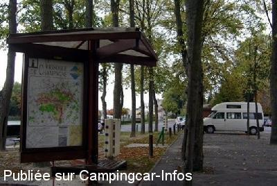

ASN = Aire de services avec stationnement nuit possible de :
MAREUIL SUR AY
(N° 606)
Accès/adresse :
Place du Grand Jard
51160 MAREUIL SUR AY
51160 MAREUIL SUR AY
Latitude : (Nord) 49.0453° Décimaux ou 49° 2′ 43′′
Longitude : (Est) 4.03473° Décimaux ou 4° 2′ 5′′
Tarif : 2015
Stationnement gratuit
30 mn d'eau ou d'électricité : 5 €
Jetons à prendre au Casino
Type de borne : Artisanale
Services :


Supérette
Boulanger
Caves
Autres informations :
Ouvert du 01/04 au 31/10
8 emplacements ombragés
Tel : +33(0)326 569 210
Près du relais nautique, au bord du canal

Le 03/01/2015 par Brian

Le 03/01/2015 par Brian

Le 14/11/2009 par Ketje

Le 04/04/2006 par telaime

Le 04/04/2006 par Joke Eijsackers
de
la normandie
le 18/06/2014 :
§ de plus en plus de mal pour se garer un panneau interdit de stationner a coter de l air sous les arbres
il y a que 5 places très sombre
§ de plus en plus de mal pour se garer un panneau interdit de stationner a coter de l air sous les arbres
il y a que 5 places très sombre
de
Styns Jean Claude
le 12/05/2014 :
Coin très agréable, petit problème le dimanche pour acheter des jetons à la supérette elle est fermée.
Coin très agréable, petit problème le dimanche pour acheter des jetons à la supérette elle est fermée.
de
G.T
le 11/04/2014 :
j ai bien vu le bistrot, mais pas de menu, ce qui n enléve rien au charme de ce petit coin , avec des gens du village sympas. merci
j ai bien vu le bistrot, mais pas de menu, ce qui n enléve rien au charme de ce petit coin , avec des gens du village sympas. merci
de
DD
le 23/11/2013 :
Nous aimons faire étape à Mareuil s/aÿ depuis plusieurs années déja. Mais depuis la réouverture du Bistrot de Mareuil nous faisons un détour pour y passer.Le patron Jean-Eric et son épouse Sandrine y acceuillent les camping-carristes en toute simplicité et nous servent des plats cuisinés par eux à très bons prix.
Sur.... nous y reviendrons encore.
Nous aimons faire étape à Mareuil s/aÿ depuis plusieurs années déja. Mais depuis la réouverture du Bistrot de Mareuil nous faisons un détour pour y passer.Le patron Jean-Eric et son épouse Sandrine y acceuillent les camping-carristes en toute simplicité et nous servent des plats cuisinés par eux à très bons prix.
Sur.... nous y reviendrons encore.
de
sergio 11
le 18/11/2013 :
Passage le 03/11/2013
Très belle aire située au bord du canal. Emplacements limités (8 places ) mais possibilité à proximité le long du canal.
Petit casino pour dépanner et acheter un jeton pour les service.
Vidange wc possible en soulevant te tampon situé à côté de la grille eaux sales. information de la mairie.
Super aire.
Passage le 03/11/2013
Très belle aire située au bord du canal. Emplacements limités (8 places ) mais possibilité à proximité le long du canal.
Petit casino pour dépanner et acheter un jeton pour les service.
Vidange wc possible en soulevant te tampon situé à côté de la grille eaux sales. information de la mairie.
Super aire.
de
lb car
le 08/08/2012 :
trés bien aire en ville
avec toute ce qu'il faut , en ville
le seul défaut il n'y a que 5 places.
trés bien aire en ville
avec toute ce qu'il faut , en ville
le seul défaut il n'y a que 5 places.
de
lemonnier jean marie
le 28/03/2012 :
superbe aire de repos dommage comme toujours trop petit
on etait garé sur le parking voitures mais nous avons trouvé le calme et le paysage reposant merci a cette petite commune
superbe aire de repos dommage comme toujours trop petit
on etait garé sur le parking voitures mais nous avons trouvé le calme et le paysage reposant merci a cette petite commune
de
Steve Tomlinson
le 29/09/2010 :
The site is being refurbished and it looks like a "proper" bourne will be fitted soon, so it might be going to charge for services. Very good location and really pretty village. Our 2nd time here.
The site is being refurbished and it looks like a "proper" bourne will be fitted soon, so it might be going to charge for services. Very good location and really pretty village. Our 2nd time here.